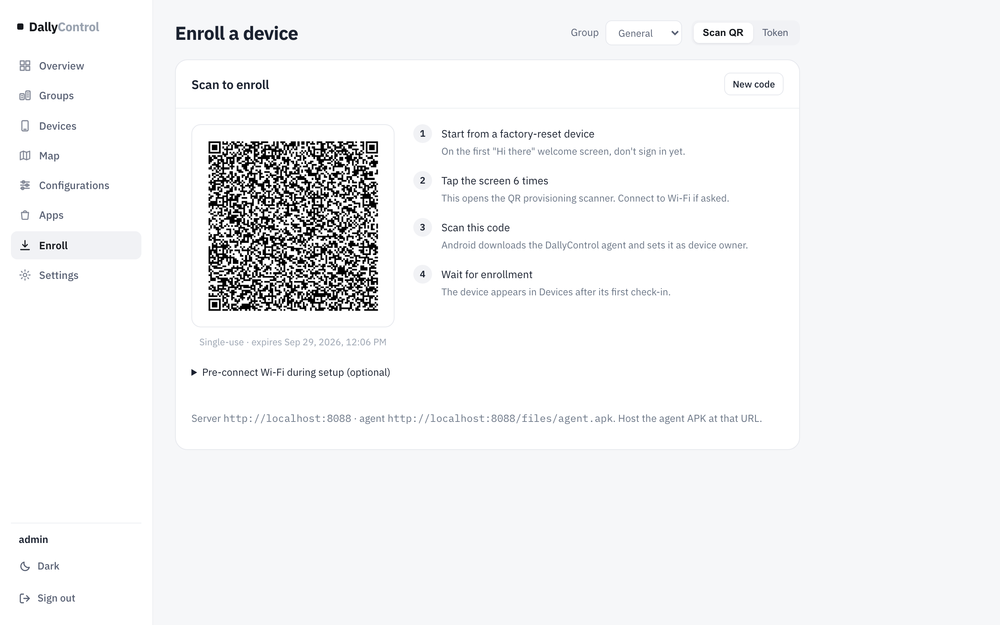
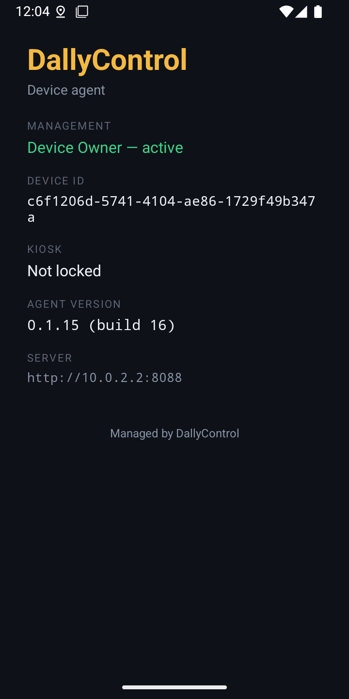
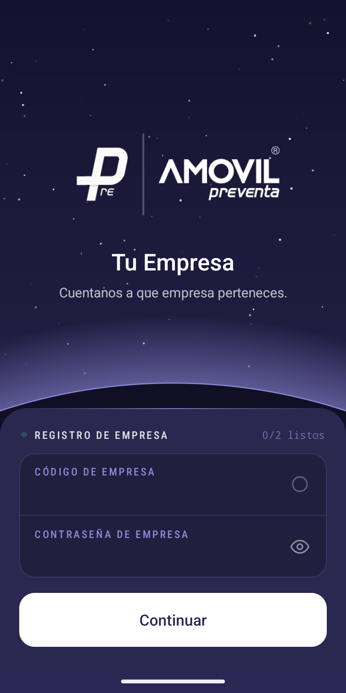
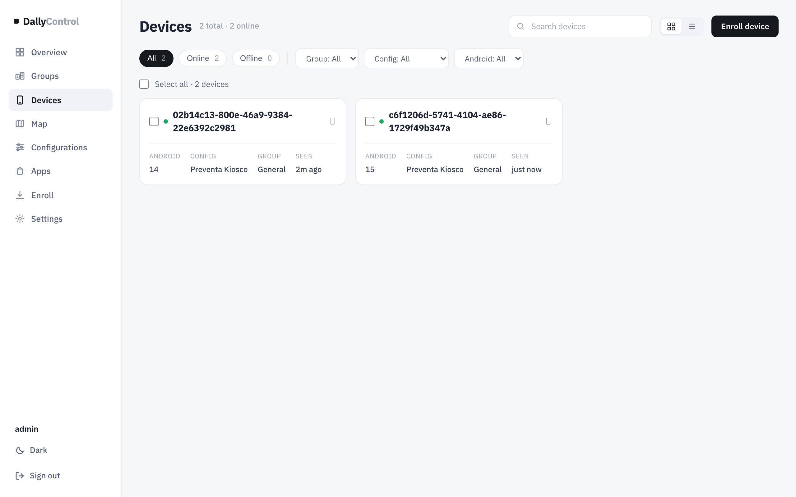
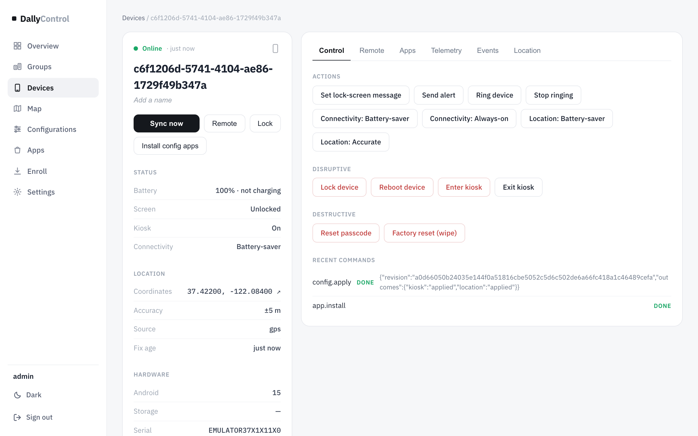
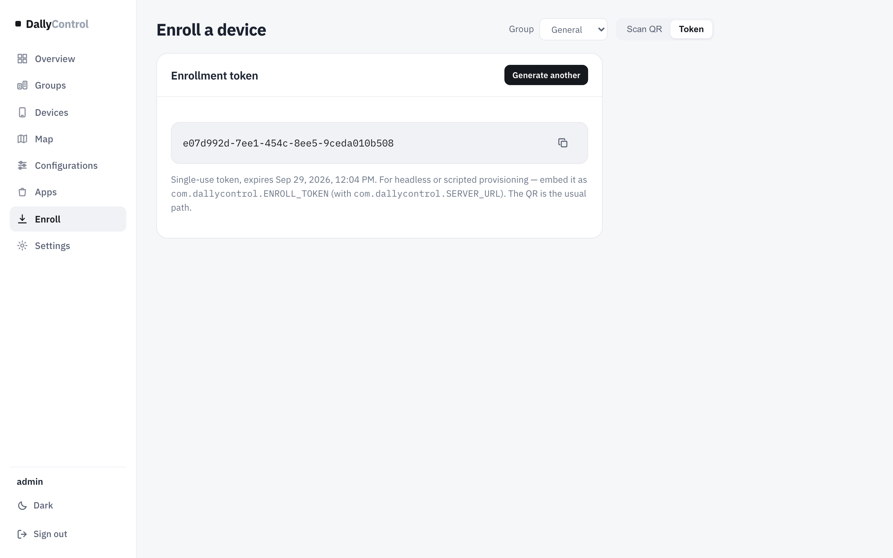
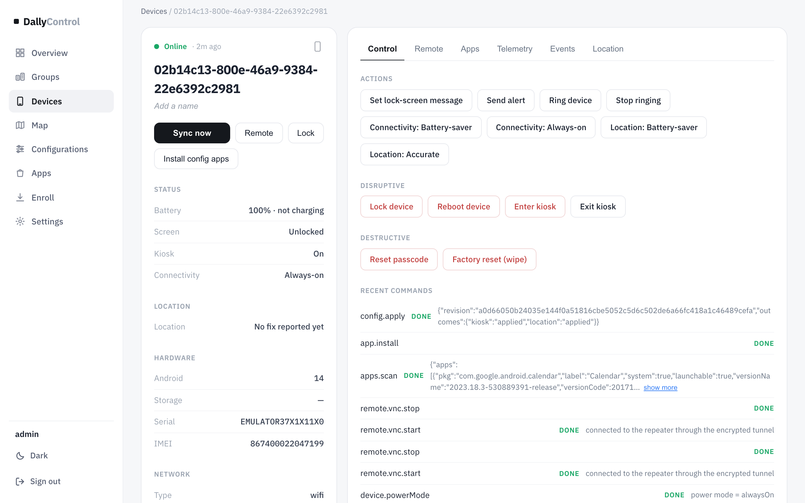
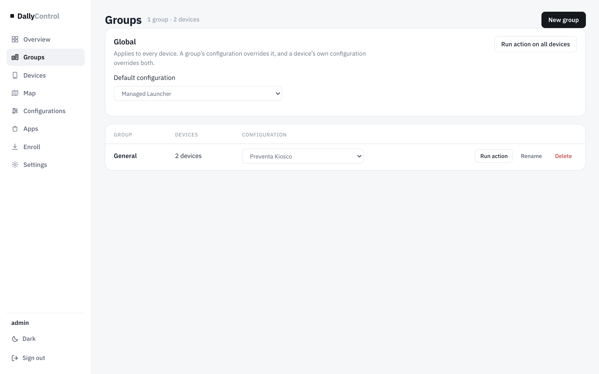

Cómo poner un teléfono bajo DallyControl: si es nuevo, si ya está en uso, y cuándo (y cómo) hay que formatearlo.
Android 7 o superior por QRAndroid 6 por USBProbado en emuladores Android 14 y 15
Contenido
Antes de empezar: qué método usar
Teléfono nuevo o recién formateado (QR)
Teléfono que ya está en uso
Cuándo toca formatear y cómo hacerlo
Qué pasa después de enrolar
Problemas frecuentes
DallyControl · consola web y agente Android · septiembre 2026
01 Antes de empezar
Enrolar es convertir el agente de DallyControl en el propietario del dispositivo (Device Owner). Solo así puede instalar apps sin preguntar, bloquear el teléfono en kiosco, aplicar políticas o borrarlo a distancia.
La regla de Android que lo decide todoAndroid solo deja nombrar un propietario del dispositivo en un teléfono sin cuentas (ni Google, ni Samsung, ni de ninguna app) y, por QR, solo durante la configuración inicial, antes del asistente de bienvenida. Por eso un teléfono ya en uso casi siempre hay que formatearlo.
Qué método usar
Situación del teléfono
Método
Notas
Nuevo, de caja
QR
El camino normal. Ver sección 2.
Recién formateado
QR
Igual que uno nuevo.
En uso, con cuentas que se pueden quitar
USB (sin formatear)
Se quitan todas las cuentas y se enrola por cable. Ver sección 3.
En uso, con cuentas que no se pueden quitar o datos que no importan
Formatear y QR
Ver secciones 4 y 2.
Con otro MDM (MobiControl, etc.) o con el agente antiguo
Formatear y QR
Solo puede haber un propietario del dispositivo.
Android 6
USB
El QR de Android empieza en la versión 7. En Android 6 no hay control remoto.
Qué necesitas
Acceso a la consola de DallyControl con un usuario que pueda editar dispositivos.
El grupo (empresa) al que va el teléfono, creado en Groups. El grupo decide su configuración y sus apps.
Internet en el teléfono durante el enrolamiento (Wi-Fi o datos). El QR puede llevar la red Wi-Fi para conectarse solo.
Para el método USB: un computador con las herramientas de DallyControl y el cable del teléfono.
Para el método QR: el APK del agente publicado en el servidor (/files/agent.apk). Lo deja listo el administrador del servidor una vez; la página Enroll muestra la dirección que usará el teléfono.
02 Teléfono nuevo o recién formateado
El teléfono lee un código QR en la primera pantalla, descarga el agente de DallyControl y se configura solo. Tarda un par de minutos.
En la consola
Abre EnrollEn el menú de la izquierda.
Elige el grupoArriba a la derecha, en Group. El teléfono entrará directamente en esa empresa y recibirá su configuración y sus apps.
Opcional: Wi-FiEn «Pre-connect Wi-Fi during setup» puedes poner la red; el teléfono se conectará sin que nadie la escriba.
Un código por teléfonoCada QR sirve para un solo teléfono y caduca en 24 horas. Para el siguiente teléfono pulsa New code.
/enroll

Enroll. Grupo elegido arriba (General), el QR de un solo uso y los pasos a seguir en el teléfono.
En el teléfono
Enciéndelo en la pantalla de bienvenidaLa primera pantalla del asistente («Hola», «Hi there», «Te damos la bienvenida»). No inicies sesión con ninguna cuenta.
Toca 6 veces en el mismo punto de esa pantallaSe abre el lector de QR para aprovisionamiento. Si pide Wi-Fi, conéctalo (salvo que el QR ya lo lleve).
Escanea el QR de la consolaAndroid descarga el agente de DallyControl y pregunta si esta organización puede administrar el teléfono. Acepta.
Termina el asistenteEl agente queda como propietario del dispositivo y se enrola en segundos.

Agente enrolado. «Device Owner — active» y el identificador del dispositivo.

Segundos después. El teléfono ya instaló la app de su grupo y entró en kiosco, sin tocar nada.
Control remotoEl QR deja el teléfono totalmente administrado, pero la vista y el control remoto (pestaña Remote) necesitan además dos permisos que Android solo concede por cable. Para los teléfonos que vayan a necesitar soporte remoto, haz una vez el paso USB de la sección 3 con la opción --remote.
Comprueba en la consola
El teléfono aparece en Devices en cuanto se conecta por primera vez, con su grupo y su configuración.
/devices

Devices. Cada tarjeta muestra Android, configuración, grupo y hace cuánto se conectó.
/devices/…

Ficha del dispositivo. En «Group & configuration» se ve su empresa, la configuración que ejecuta y de dónde le viene (Device, Group o Global). Desde aquí se puede cambiar de grupo.
03 Teléfono que ya está en uso
Un teléfono que ya pasó el asistente de bienvenida no puede leer el QR de aprovisionamiento. Tienes dos opciones.
Opción A — Formatear y usar el QR (recomendada)
Es la más sencilla y la que deja el teléfono más limpio. Sigue la sección 4 para formatearlo y después la sección 2. Se pierden los datos del teléfono, así que antes guarda lo que haga falta.
Opción B — Enrolar por USB sin formatear
Sirve si el teléfono puede quedarse sin cuentas. Es también el camino para Android 6 y para dejar listo el control remoto.
Quita todas las cuentasAjustes → Contraseñas y cuentas (o «Cuentas»): elimina Google, Samsung, WhatsApp Business, Microsoft… todas. Quita también perfiles de trabajo y usuarios secundarios.
Activa la depuración USBAjustes → Acerca del teléfono → toca 7 veces «Número de compilación». Luego Ajustes → Sistema → Opciones de desarrollador → «Depuración USB».
Conéctalo al computadorAcepta en el teléfono el aviso «¿Permitir depuración USB?».
Ejecuta el enrolamientoDesde la carpeta de DallyControl, con el grupo al que va (su número aparece en la consola):
El script instala el agente, lo hace propietario del dispositivo, le da el servidor y un código de un solo uso, y con --remote deja listo el control remoto. En unos segundos el teléfono aparece en Devices.
Si falla con «there are already some accounts on the device»Queda alguna cuenta. Revisa Ajustes → Cuentas otra vez (hay apps que crean cuentas propias). Si no se puede quitar, toca formatear.
Método manual con token
La pestaña Token de Enroll muestra el mismo código de un solo uso en texto, por si hay que pasarlo a mano en un enrolamiento por USB.
/enroll · Token

Enroll → Token. El código de un solo uso para enrolar sin QR.
04 Cuándo toca formatear
Formatear (restablecer de fábrica) borra todo el teléfono y lo deja como nuevo, listo para el QR.
Caso
Por qué
Tiene cuentas que no se pueden quitar
Android no deja nombrar propietario del dispositivo con cuentas.
Está administrado por otro MDM (MobiControl, Intune…) o era de otra empresa
Solo puede haber un propietario; el anterior hay que quitarlo, y lo limpio es formatear.
Se enroló con el agente antiguo (MDMesh, com.mdmesh.agent)
El agente cambió de paquete (com.dallycontrol.agent); para Android es otra app.
Se lo asignas a otra persona o empresa
Para que no queden datos, cuentas ni apps del anterior.
Se perdió o lo robaron
Borrado remoto desde la consola para proteger los datos.
El agente fue desinstalado o dejó de funcionar
Sin agente no hay administración; se vuelve a empezar.
Cómo formatear
Desde la consola (teléfono enrolado)
Abre el dispositivoDevices → el teléfono → pestaña Control.
Destructive → Factory reset (wipe)Escribe WIPE para confirmar. El teléfono se borra en cuanto recibe la orden.
El borrado de fábrica solo se lanza dispositivo a dispositivo: la consola no deja hacerlo sobre un grupo ni sobre todos.
/devices/… · Control

Control. Acciones del dispositivo; «Factory reset (wipe)» está en el grupo Destructive.
Desde el teléfono
Normal: Ajustes → Sistema → Opciones de restablecimiento → Borrar todos los datos (restablecer de fábrica).
Si no arranca o está bloqueado: apagado, mantener Encendido + Bajar volumen (según marca) para entrar en Recovery y elegir «Wipe data / factory reset».
Protección de restablecimiento (FRP)Si el teléfono tenía una cuenta de Google, después de formatear pedirá esa misma cuenta para continuar. Antes de formatear, quita la cuenta en Ajustes → Cuentas, o ten a mano su usuario y contraseña. Si no, el teléfono queda bloqueado en el asistente.
Después de formatear, el teléfono vuelve a la pantalla de bienvenida: sigue la sección 2. Si el teléfono enrolado estaba en la consola, puedes borrar su ficha antigua en Devices (seleccionar → Delete); al enrolarse de nuevo aparece con un identificador nuevo.
05 Qué pasa después de enrolar
Todo lo demás llega solo, según el grupo del teléfono.
EnrolamientoEntra en su grupoEl del QR, o el que le asignes después.
→
ConfiguraciónLa de su nivelLa suya propia si la fijas; si no, la del grupo; si no, la global.
→
AppsSe instalan solasSin preguntar al usuario.
→
Kiosco y políticasSe aplicanWi-Fi, cámara, capturas, kiosco…
/groups

Groups. Configuración global, y por cada empresa su configuración, sus dispositivos y acciones sobre todo el grupo.
Cambios más adelante
Mover a otra empresa: Devices → seleccionar → Move to group, o desde la ficha del teléfono. Recibe la configuración y las apps del grupo nuevo.
Una configuración distinta solo para ese teléfono: en su ficha, «Set on device». Gana sobre la del grupo y la global; «Inherit» lo devuelve a la de su grupo.
Soporte inmediato: con el teléfono bloqueado en modo ahorro de batería, una orden puede tardar unos minutos en llegar. Para los equipos que necesiten soporte al instante, ponlos en Always-on (pestaña Remote, o Actions en Devices).
06 Problemas frecuentes
Síntoma
Causa probable
Qué hacer
Al tocar 6 veces no sale el lector de QR
El teléfono ya pasó el asistente, o no está en la primera pantalla
Formatear (sección 4), o usar USB (sección 3).
«No se puede configurar el dispositivo» al escanear
Código ya usado o caducado (24 h), o sin internet
Pulsa New code en Enroll y vuelve a escanear; revisa la Wi-Fi.
El teléfono no aparece en Devices
Sin conexión con el servidor
Comprueba internet en el teléfono; abre la app DallyControl y revisa «Server».
USB: «there are already some accounts»
Queda alguna cuenta
Quita todas las cuentas; si no se puede, formatea.
Tras formatear pide una cuenta de Google
Protección de restablecimiento (FRP)
Entra con la cuenta que tenía; la próxima vez quítala antes de formatear.
La pestaña Remote dice que el teléfono no tiene vista remota
Se enroló por QR, sin el paso USB
Haz una vez el enrolamiento USB con --remote.
Las órdenes tardan minutos
Teléfono bloqueado en modo ahorro
Ponlo en Always-on si necesita respuesta inmediata.